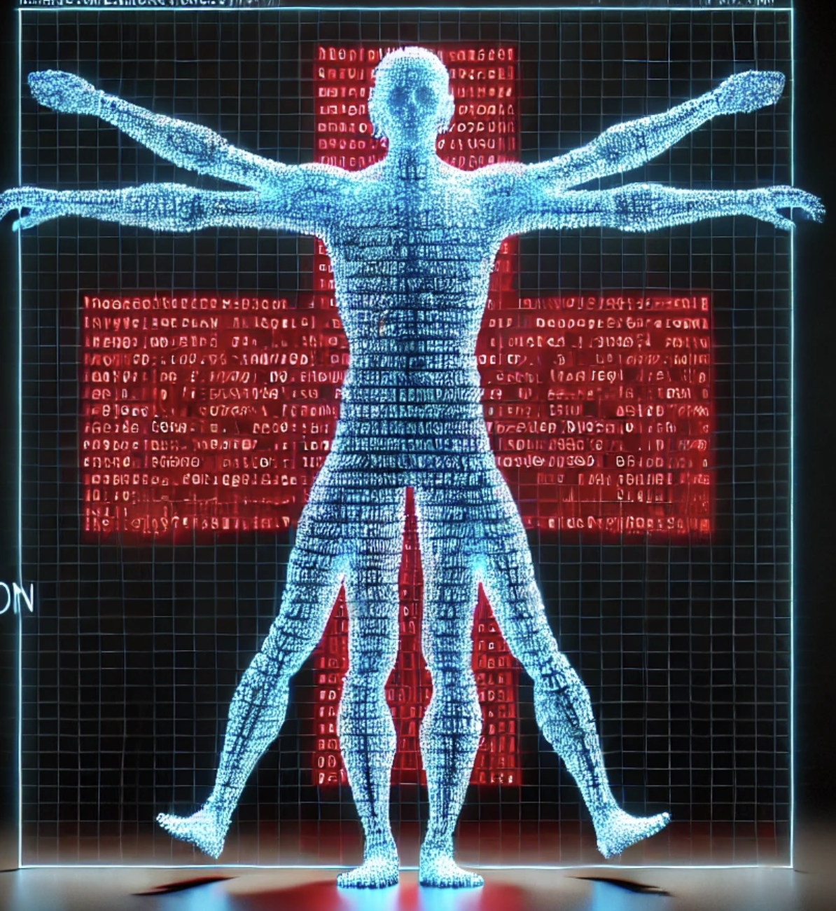

Our Vision
Technology and healthcare are increasingly intertwined, the security of medical devices and the protection of patient data are more critical than ever. Imagine a pacemaker being hacked, a hospital’s entire database held ransom, or a life-saving device failing due to outdated software. These are not hypothetical scenarios—they are real threats that we face today. With every challenge comes an opportunity for innovative solutions for VivaSecuris to support you.
As leaders in AI security, we are committed to pioneering solutions that address these critical issues. Our proactive approach focuses on preventing vulnerabilities and seamlessly integrating advanced technologies to protect patient data and medical devices. We aim to set a new standard for security in the healthcare industry, ensuring that patient care remains safe and uninterrupted in the face of evolving cyber threats.
We leverage advanced AI and machine learning technologies to secure medical devices and patient data. Automated threat detection and response systems enable us to quickly identify and mitigate potential threats, ensuring that sensitive information remains protected.

Service disruptions can occur due to cyberattacks, system failures, or even natural disasters. Picture a ransomware attack bringing an entire national health service to its knees for weeks, disrupting patient care and causing chaos across the country[source: BBC]. The fallout from such an event can be catastrophic.
Proper scanning of medical device software is crucial to ensure patient safety and regulatory compliance. It helps identify vulnerabilities and potential security threats before they can be exploited, preventing malfunctions that could lead to severe health risks. Additionally, thorough scanning safeguards sensitive patient data, maintaining trust and upholding the integrity of healthcare systems.
Hackers are increasingly targeting critical care medical devices. Envision a scenario where a ransomware attack affects hospitals worldwide, causing significant disruptions in medical services and putting countless lives at risk【source: NHS】. The threat is not just theoretical; it’s happening now.
We advocate for regular risk assessments and continuous improvement of defenses. By integrating advanced technologies and maintaining a proactive approach, we can protect our healthcare system and ensure uninterrupted, safe patient care.

Joshua Hill
Joshua Hill aka @p0sixninja is a self-taught mad scientist and security architect. A life long hacker of anything that piques his interests. CEO of Pseudosecurity Labs Inc. and CTO of VivaSecuris. Ex-member of Chronic-Dev Team and iPhone Dream Team. The chief architect of GreenPois0n and Absinthe jailbreaks. Developer of idevicerestore, libirecovery, among others.
James Utley MSc, PhD
Meet Dr. James Utley, PhD, a pioneering Immunohematology expert with over two decades in cellular therapy. A Johns Hopkins alum, he revolutionized cellular transfusion at the Department of Defense and served as Technical Director at Banner Health, overseeing 150K successful transfusions. A Biohacker at heart, James pushes the boundaries of CRISPR and genetic engineering, contributing to innovative FDA-approved breakthroughs. Now, as the Chief Scientific Officer at Auragens, he's making a significant impact in the stem cell revolution.
Phil Rhodes
Phil Rhodes is an accomplished leader with over two decades of experience in military and civilian roles. He is a medical device cybersecurity champion, "Big A" Airman, USN Senior Chief, and soon-to-be Mustang Officer. As the COO of Vivasecuris he oversees critical programs and day-to-day operations. He's a federal government programs expert, leader, and mentor with expertise in leadership, communication, decision-making, and project management. He is a results-oriented professional with a proven track record of modernizing systems, streamlining processes, and building high-performing teams. In his personal life, he is a devoted husband and father of three, a casual gamer, jiu-jitsu enthusiast, and a dedicated walker of his dachshund.
 The rise of Electronic Health Records (EHRs) and telemedicine has made data breaches more prevalent. Imagine waking up to news that over 41 million healthcare records have been exposed in a single year, leading to widespread identity theft and compromised patient privacy [source: HIPAA Journal]. This is the reality we face today.
The rise of Electronic Health Records (EHRs) and telemedicine has made data breaches more prevalent. Imagine waking up to news that over 41 million healthcare records have been exposed in a single year, leading to widespread identity theft and compromised patient privacy [source: HIPAA Journal]. This is the reality we face today.
 Vendor risk management is essential. Regular system checks, reliable backups, and comprehensive disaster recovery plans ensure that we are prepared for any contingency. By consolidating security measures, we make them easier to manage and more effective.
Vendor risk management is essential. Regular system checks, reliable backups, and comprehensive disaster recovery plans ensure that we are prepared for any contingency. By consolidating security measures, we make them easier to manage and more effective.